Crypto Snake Treasury 欢迎来到 Crypto Snake Treasury NFTs Collection！每个 Crypto Snake 都持有一个特定的 Crypto Coin/Token，每次销售都会建立一个金库。任何超过 0.0025 ETH 的报价都将被接受
Crypto Spirits NFT Crypto Spirits 是托管在以太坊区块链上的 1660 件可定制艺术品的集合。每件艺术品都提供双重功能，既是独一无二的收藏品，又充当节点，为 Spirit 平台提供深层效用；业界首
Crypto Squatches Crypto Squatches 是 10,000 个 Sasquatch 和 Bigfoot NFT 的集合，它们作为我们社区的会员和投票，以及空投、育种、独家 METAVERSE 活动和 SQUATCH 游戏。提升 NFT 空间作为一个集体是我们的倡议！ ▶ 什么是 Crypto S
Crypto Wheels Club (Official) 8,888 个独特的轮子艺术 NFT，配备破坏性火力。你会成为统治遗忘王国的人吗？CryptoWheels是 8,888 件独特的手工艺术品的集合，其中包括具有大规
Crypto.com DeFi Wallet 直接从您的 DeFi 钱包中种植和交换 DeFi 代币的最佳场所 流动性提供者享受选定矿池的交换费分享和红利收益一个非托管钱包，可让您在一个地方访问一整套 DeFi 服务。
Crypto9 Official “Crypto 9”是存在于区块链/IPFS 上的 3650 个随机 Genesis 生成和独特派系 NFT 的集合。它也是 DSverse 和无限扩展未来的关键。故事从突出显示的岛屿开始，该岛
CrypToadettez CrypToadettez 是由女性艺术家和联合创始人 Girlz Wrld 创建的 6969 个 NFT 生活在以太坊区块链上的集合。Toadettez 正在寻找他们失散多年的男性同行 CrypToadz。
CryptoAdventuresWorld Characters 故事开始！我们的英雄是一个精灵，他在森林中醒来，渴望进行新的冒险。我们的英雄将前往 Gladian 营地，逃离迷宫，在那里他将帮助其他生物：半人马、Long
CrypToadz Ghostz CrypToadz ‘万圣节版’：CrypGhostz 是 CrypToadz 的衍生集合。 今天选择你的幽灵蟾蜍。 不要忘记 !vibe 和 !croakCrypGhostz 是 6969 种小型两栖生物的集合，它
CryptoAmulets CryptoAmulets是 1680 个 NFT，得到上师 LP Heng 的加持，为它们的主人带来祝福和好运！ LP Heng 生于 1927 年 8 月 11 日，居住在泰国素林府的 Wat Pattana Tham
CryptoApesNFT 欢迎来到 Crypto Apes 猿俱乐部，这是一个由 555 只猿组成的社会，他们根本不在乎别人对他们的看法。555 个猿是 120 多个独特字符的私人集合，每个猿的所有权证明作
CryptoAssetsCollection 这些 CryptoAssets 是 NFT 比基尼辣妹的第一个集合。加密资产集合一套固定的只有 51 个宝贝供您收集（每个州 100 个），并且 #1 是美国最好的比基尼宝贝。它们于 2021 年年中推出
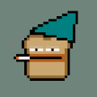 CrypToasts NFT 不可替代代币 (NFT) 是区块链上与特定数字或实物资产相关联的记录。 NFT 的所有权记录在区块链中，并且可以由所有者转让，从而允许 NFT 被出售和交易。 NFT 可以由任
CryptoAvatar.me CryptoAvatar - 让 NFT 世界变得更美好。 在加密世界中，它是 10000 个独特的头像。 Cryptoavatar的灵感来自多娃娃，头像生成器，个人资料图片创建者。 名称和单
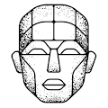 CryptoAvatars 可互操作的 3D 化身平台，用于创建、销售和交易 NFT 化身。头像是以太坊或多边形 (Matic) 链上的 VRM 文件和单一版本令牌。我们平台中的所有头像均已获得许可，因此任
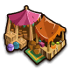 CryptoBay MarketPlace CryptoBay 市场支持任何符合 ERC-721 标准的 NFT 和最佳 Play &在 BSC、CryptoBay 上赚取 gamefi 平台CryptoBay doesn’t work properly without JavaScript enabled. Please enable it to continue. bsc. 无匹配数据.
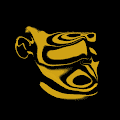 CryptoBlanks CryptoBlanks 是最大的生成艺术收藏。5000 个空白。空白面的不同部分代表地球上的地理位置。很快，“天选者”将诞生并带领我们接管整个宇宙。 10 月 3 日预售薄荷
Cryptoboyz CC0 - CONTRACT MIGRATED 在邪王格力普林施展咒语并改变所有人之前，生活是怎样的？6969 Boyz 在以太坊区块链上。CC0 项目。纯！共鸣。1/2 在一次多事的铸币之后，我们现在
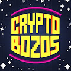 CryptoBozosNFT 888 创世纪薄荷 售罄 由儿童设计的 7777 个像素 NFT 头像的集合，这些头像建立在以太坊区块链上，具有不同的特征和稀有度。一个有远见的、实用驱动的 NFT 项目，旨在
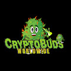 Cryptobuds Sativa Collection Cryptobuds Sativa 系列是由 4200 个不可替代的数字收藏品组成的独特集合。▶ 什么是 Cryptobuds Sativa 系列？ Cryptobuds Sativa Collection 是一个 NFT（不可替代令牌）集合。存储在区块链上的数字艺术品集合
CryptoChimpzNFT CryptoChimpz 被迫陷入混乱，其中 5,000 人在人类对 ChimpStar 星系的残酷入侵后被捕。黑猩猩在他们的实验室里遭受了人类的残酷测试，但现在已经挣脱了。 黑猩猩需要你的帮助！他
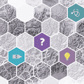 CryptoCities 2018 CryptoCities 于 2017 年开发，并于 2018 年 2 月正式推出，是首批可玩的 NFT 之一。它最近升级到 ERC-721，并引入了 25,000 个城市的硬性限制。现实世界中的任何城市都只能存
Cryptock, The Society Cryptock 是一个奢侈艺术收藏品的集合。我们的目标是构建原始的、手工制作的、从头开始制作、内部构建、3D 和元节就绪的工件。 通过创建我们的 NFT 艺术收藏品，
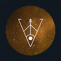 CryptoConstellations 经过 拥有属于你的银河。88 个独特的 NFT。1/1 版。灵感来自 12 星座和加密社区的日常生活。它由 Metacraft 和 Showme 共同出版。穿上它，在 Metacraft 中与众不同,▶ 什么是
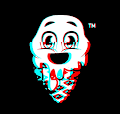 CryptoCreamz Genesis CryptoCreamz 是 943 个独特的冰淇淋 NFT 的集合——生活在以太坊区块链上。您的 CryptoCream 可让您获得免费冰淇淋、独家商品和 meta-verse 特权。 由冰淇淋爱好者为冰淇淋爱好者打造！▶ 什么
CryptoCrystal CryptoCrystal 是有知觉的闪亮水晶，具有与人类相似的个性，同时又像宠物一样过于可爱。它们中的每一个在以太坊中都是独一无二的，没有重复的 DNA 结构。 CryptoCrystal 不是 Cry
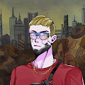 CryptoCyborg СryptoСyborgs 是 10,000 个独特的、随机生成的电子人的集合，它们以 ERC-721 NFT 的形式存在于 Polygon 区块链上。 每个 СryptoСyborgs 都是独一无二
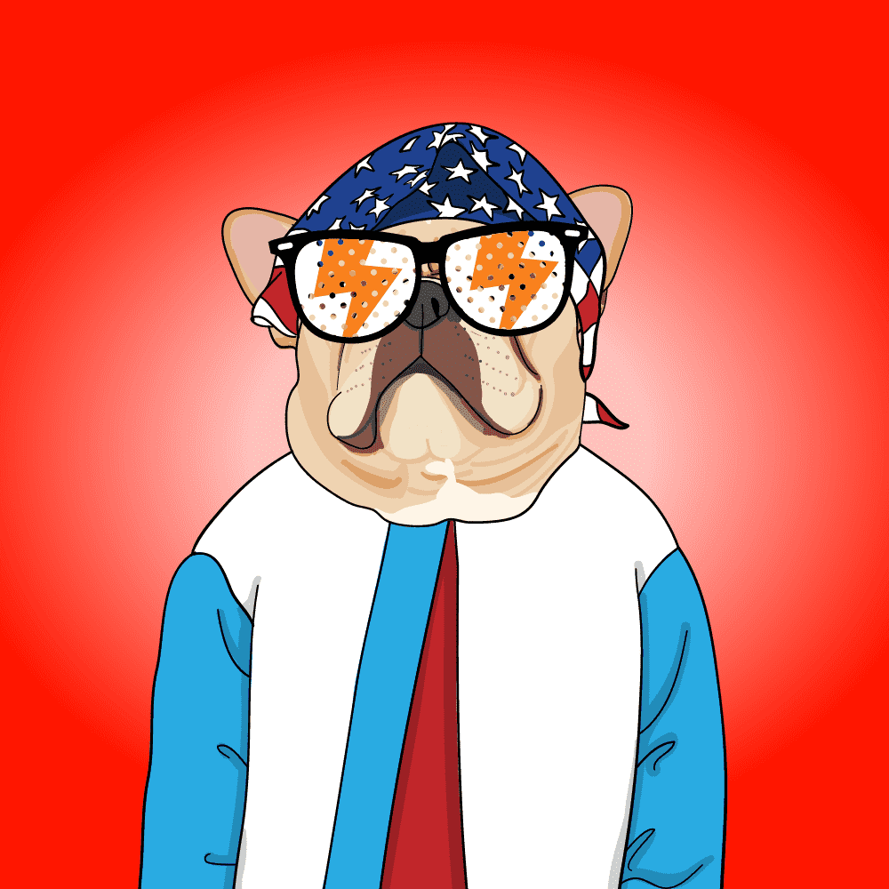 CryptoDawgs Crew **CryptoDawgs Crew：**在区块链上大摇大摆的时髦 dawgs。部署在 Polygon 区块链上的 10,000 个铸造 CryptoDawg NFT 的最大供应量。 **CryptoDawgs Fluro Prints：**印在画布上的 9 种 NFT 的独
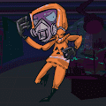 CryptoDocs NFT Crypto Docs NFT 正在创造历史，通过其品牌合作伙伴 Netvrk.co 将第一家远程医疗诊所带入虚拟世界。持有 Crypto Doc 并获得 $DOC 代币，这是符合 HIPAA 的远程医疗诊所的官方代币。 ▶ 什么是
CryptoDolphinz CryptoDolphinz 是 Polygon 网络上的一个 NFT 项目，其背后有着特殊的使命。我们希望帮助拯救我们的海洋，同时拥有一个有趣的独家收藏品来向您的朋友和家人炫耀。Crypto
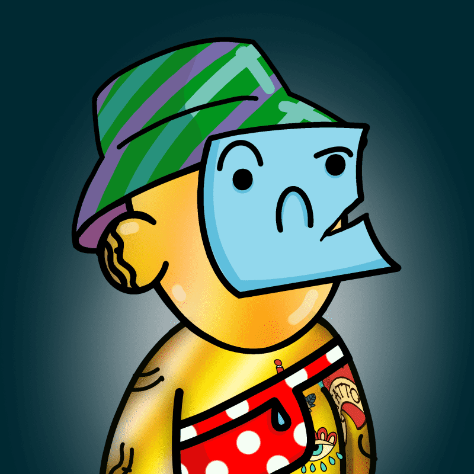 CryptoDoodez 加密杜兹！CryptoDoodez 是过去一年中一些最伟大和最具标志性的 BlueChip NFT 项目的演绎。KronicKatz 的创始人 CryptoDoodez 的创建提醒人们艺术也是实
CRYPTODOPE 质押并赚取高达 234% 的存款从 7.8% 到 17% 的每日投资回报率 5 级推荐奖励PyCryptodome 是一个自包含的低级加密原语的 Python 包。它支持 Python 2.7、Pyth
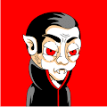 CryptoDracula CryptoDracula 是一个受虚构人物“德古拉”启发的 NFT 集合。每个 CryptoDracula 都以不同的风格和角色生成，例如肤色、配饰、表情、衣服等。一些 CryptoDracula 角色还模仿真实角色和虚构角色的
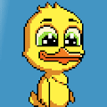 CryptoDucks Genesis 虽然我们在 NFT 和 Crypto 领域为自己做得很好，但我们的团队个人被抓获并包揽了更多的无实用程序 pfp 项目和 rugpulls，我们无法计算。有种撕心裂肺的感觉
CryptoFantasy NFL 2021 欢迎来到 LeagueDAO：OpenSea 上的 Cryptofantasy NFL 2021 之家。发现这个系列中最好的项目。2022 梦幻足球超级联赛将于今年秋天到来！ 格格不入的社区
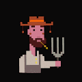 CryptoFarm Book James DiMartino 的 CryptoFarm 是对 Web3 空间和以太坊力量的奥威尔式评论。该项目仅限于 1000 个 ERC721A 代币，并与 Nova DAO 合作推出。▶ 什么是 CryptoFarm 书？ CryptoFarm Book 是一个 NFT（不可替代令牌）集合。
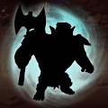 CryptoFighters Alliance 几个世纪以来，Ethos 的五个交战部族——兽人、半精灵、法师、恶魔和死亡骑士——一直在为维护统治地位和控制宇宙而战。 当一个神秘的入侵物种威胁
CryptoFinney 10,000 个生成独特的 CryptoFinneys 登陆以太坊。第一个使用 GenDrops 平台合约启动的项目，CryptoFinney 具有多级升级机制、索赔和许多未来的会员福利，包括 DAO 投票。
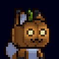 CryptoFoxes Events 具有 Cryptofoxes First 实用程序。超过 400 种独特资产和 10 种 Fox 模型。每个 Cryptofox 都是独一无二的，可能性是无穷无尽的。你准备好完成 FoxDex 了吗？VX Foxes 是与 The Sandbox Game 兼容的一代。它
CryptoGangs Canna Crypto Gangs 提供 2,100 个身份，表明他们与 5 个帮派中的 1 个有隶属关系，每个帮派由 420 个 NFT 组成。Crypto Gangs 结合大麻和加密货币，与强大的大麻合作伙伴合作，为
Cryptogs Reborn - Genesis ▶ 什么是 Cryptogs Reborn - Genesis？ Cryptogs Reborn - Genesis 是一个 NFT（不可替代令牌）集合。存储在区块链上的数字艺术品集合。 ▶ 有多少 Cryptogs Reborn - Genesis 代币存在？ 总共有 71 个
CryptoNinja Partners Polygon CryptoNinja Partners (CNP) 是由 CryptoNinja 子角色主演的 22,222 件作品集。成为拥有者，踏入令人兴奋的忍者世界！今年5月15日发售以来，流通总额突破2,600ETH(相当于5.2亿
Cryptoon Goonz Originals Cryptoon Goonz 是由著名纹身艺术家 Sean Morgan 设计的 6,969 个怀旧“橡胶软管风格”角色的集合。这些手绘人物的灵感来自他对街头服饰、嘻哈和几代卡通的热爱。 Gooniverse 一直在增长。
Cryptoon Goonz Portal 原始系列中的每个 Goon都可以前往新世界。但请记住，您的 Portal Goon 和 Original Goon 是同一个角色。如果你卖一个，你就卖另一个。 Cryptoon Goonz Portal NFT 在过去 7 天内售出 9 次。C
CryptoPooPoos 哦，哦，RayRay 太兴奋了，以至于当爸爸 DOS 不注意时，她会啃其他项目！ CryptoPooPoos NFT 在过去 7 天内售出 7 次。CryptoPooPoos 的总销售额为 55.99 美元
CRYPTOPOP_OFFICIAL Crypto PoP 是由 15 岁的女艺术家创作的 5.5K NFT 女性角色的集合。所有利润的 20% 将用于支持乌克兰母亲和儿童——战争的受害者。 传播包容性、多样性和善意。 我们收集的


 存储在以太网络上。")


 是由 CryptoNinja 子角色主演的 22,222 件作品集。成为拥有者，踏入令人兴奋的忍者世界！")